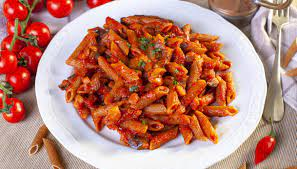

Penne al pomodoro
Ingredienti
Di seguito riportiamo gli ingredienti per preparare il nostro piatto
- 300g penne
- 1l passata di pomodoro
- 2 spicchi di aglio
- q.b. basilico
Preparazione
- Dorare gli spicchi d'aglio
- versare il sugo finché non si addensa
- Scolare la pasta e saltarla in padella
- Aggiungere il basilico e la pasta è pronta!